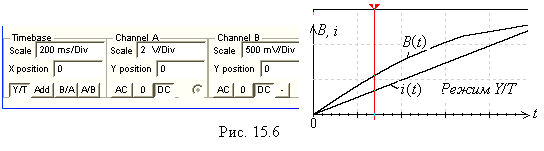

Задание 3. Открыть файл 15.5.ms10, размещённый в папке Circuit Design Suitе 10.1, или собрать схему магнитной цепи (рис. 15.5, а) на
рабочем поле программной среды MS10 для снятия
вебер-амперной характеристики Ф(i) или
характеристики Вd(t) - зависимости магнитной индукции Bd = Ф/Sd в зазоре от тока i катушки.
Для этого:
- заменить
источник постоянного напряжения F
(см. рис. 15.4) генератором линейно
изменяющегося напряжения XFG1 и включить
его в схему замещения катушки (левый контур, рис. 15.5, а), содержащей
резистор Re с электрическим сопротивлением обмотки Re = Rэ, зависимый источник напряжения INUT1, управляемый током i =
Uэ/Rэ
катушки, с коэффициентом
передачи, равным 1, и зависимый источник напряжения INUT2, управляемый током i =
Uэ/Rэ катушки,
с коэффициентом передачи, равным числу витков w катушки. При этом в схеме замещения магнитной цепи в правом контуре
(см. рис. 15.5, а) действует МДС F = wi;
- для наблюдения
графика зависимости Вd(t) на экране осциллографа на вход его канала А подать напряжение, численно равное току i катушки от источника INUT1, а на вход канала В - напряжение, пропорциональное магнитной индукции
В, снимаемое с выходных зажимов зависимого источника напряжения INUT3, управляемого током - магнитным потоком
Ф = F/(Rd + Rм) = wI/(Rd + Rм)

с коэффициентом передачи,
равным 1/Sм;
- установить параметры элементов схемы, рассчитанные или полученные
при выполнении предыдущих заданий, и режимы функционирования источников питания
и осциллографа (см. рис. 15.5, а и
б для примера, рассмотренного в п. 3 раздела "Теоретические
сведения …");
-
запустить программу MS10. Установить режим В/А работы осциллографа, см. рис. 15.5, в).
Скопировать график функции В(i) на страницу отчёта и определить
ток в катушке, при котором магнитная индукция в зазоре в 1,5 раза больше
значения индукции Вδр, рассчитанного в п. 3 раздела
"Теоретические сведения …";
- определить
диапазон допустимых значений тока, в пределах которого зависимость В(i) катушки с ферромагнитным сердечником можно считать
линейной;
- задать режим Y/T работы осциллографа и установить его визирную линию 1
на значении тока катушки, рассчитанного в п. 3 раздела "Теоретические
сведения …". Проверить, равно
ли значение магнитной индукции значению Вδр?
Вторую визирную линию осциллографа установить на значении магнитной
индукция в зазоре Вδ = 1,5Вδр. Проверить, равно ли
необходимое для этого режима работы цепи значение тока катушки
найденному значению при функционировании осциллографа в режиме B/A?

Скопировать графики функций B(t) и i(t) (см. рис. 15.6) на страницу отчёта.